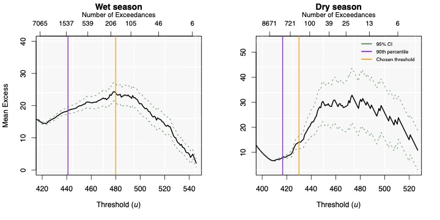
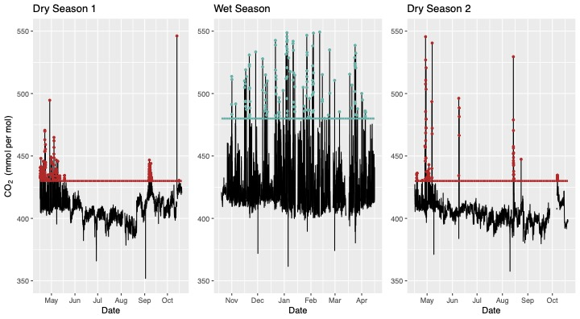
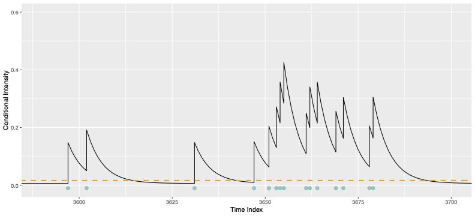
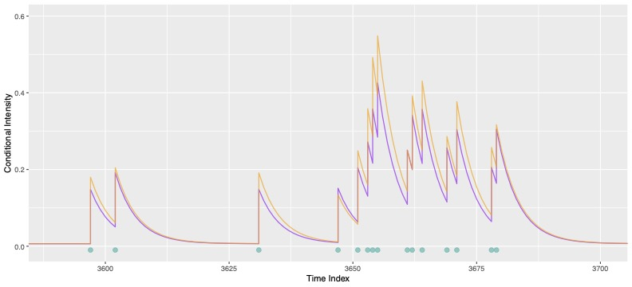
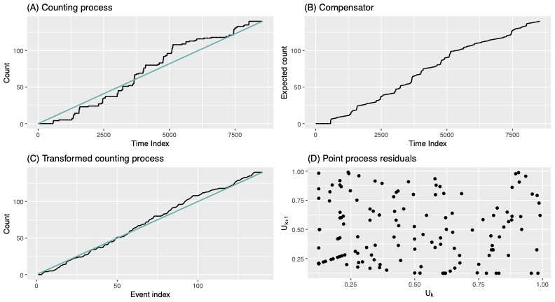

An exploration of Point Processes for environmental extremes
In this project, Manon Shapiro and I looked at the ability of Point Processes to model extreme carbon dioxide readings from a Savanna site in Kimberly. Check out the Github Repository for more!
Project Details / Background
Point processes are a type of counting process which models ocurrences of an event over time. They have established use-cases in a wide range of fields including epidemiology and queueing theory. More recently, these models have been assessed for their utility in handeling data of extreme values because certain extentsions of the Point Processes do not assume independence between events occurences. Consider the system that gives rise to earthquakes. This is an example of a situation in which the assumption of independence fails, because the aftershocks that follow an initial earthquake can trigger further earthquakes, demonstrating a degree of independence between event occurences. Recently, point processes have shown to be effective in modelling earthquake systems, as well as extreme fluctuations in financial markets. We wanted to explore their use in modeling extreme peaks of carbon dioxide readings.
Our data consisted of CO2 readings from a Savanna site in the Karoo. We investigated simple point processes and two extensions; Hawkes and Marked Hawkes processes. The Hawkes Process is self-exciting which was shown to be helpful in capturing the clusters observed in the data. A Marked Hawkes process includes an additional variable which captures the magnitude of a given event, which may be a helpful indicator as to the likelihood of successive events. We validated our models by examining the observed vs expected counting process, the compensator function, assessing the point process residuals and comparing Q-Q plots.
Given below are a selection of plots from the project. You can find every plot produced in the All Plots folder of the Github Repository. Check out the final write-up here for a much more detailed explanation of the project.
Image Gallery

This is the mean residual life plot, which was used to determine what constituted a seasonal extreme. The empirical mean is given by the solid black line and the 95% central
limit theorem-based confidence intervals are given by the green dashed line. For comparison, the 90th percentile
and the chosen threshold which is used to extract the point process realisation
are given.

This plot demonstrates the readings which are considered extreme based on the aforementioned mean residual life plot. As demonstrated above, the clustering of events observed in the dry season is very extreme in comparison to those in the wet season.

The above is a sub-section of the conditional intensity function of the Hawke's Process for the wet season. At the occurrence of an event, the conditional intensity spikes, decaying exponentially thereafter.

Here is a comparison of the conditional intensity functions of the Hawkes against the Marked Hawkes Process.

Given above are some of the validation plots used to assess model efficacy. Good model fit would be demonstrated by a closely fitted transformed counting process (Plot C) and little evidence of auto-correlation of residula (Plot D).